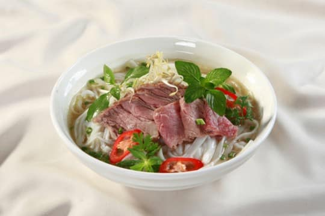
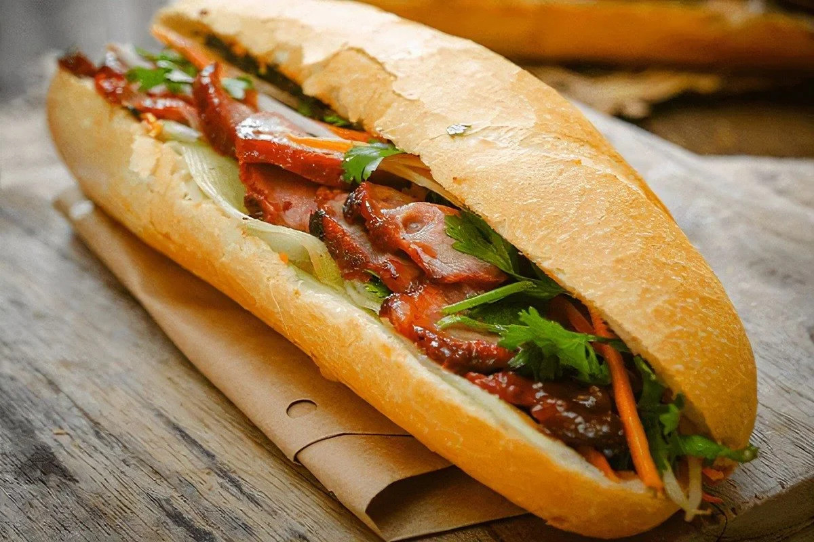
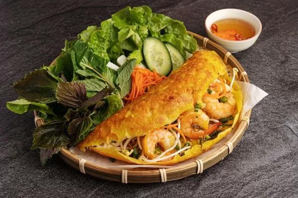

About Vietnamese Cuisine
Vietnamese cuisine is famous for its fresh ingredients, balanced flavors and diverse dishes. Here are three popular Vietnamese foods that are loved by both Vietnamese people and international visitors.
Famous Foods
-
Phở
Phở is one of the most famous Vietnamese dishes. It is a noodle soup served with beef or chicken, fresh herbs and a flavorful broth.
-
Bánh mì
Bánh mì is a Vietnamese sandwich made with a crispy baguette, meat, vegetables, herbs and special sauces.
-
Bánh xèo
Bánh xèo is a crispy Vietnamese pancake made from rice flour, filled with shrimp, pork and bean sprouts.
Gallery



Learn More
Want to learn more about Vietnamese cuisine?
Learn more about Vietnamese cuisine